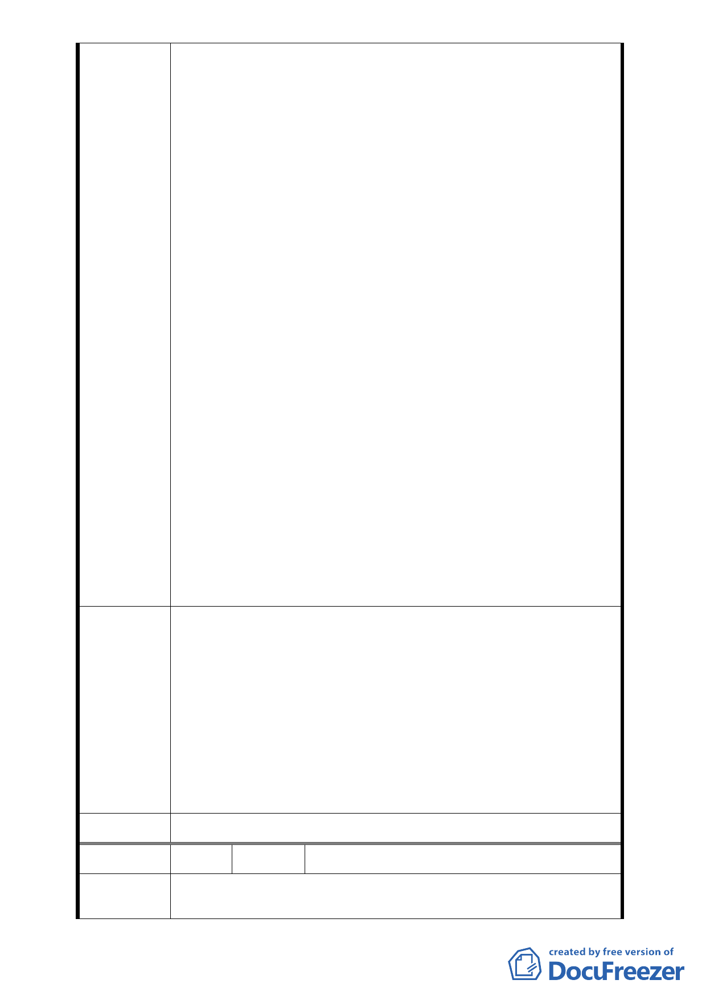

二、建請台北市都市計畫委員會、台北市都市更新處、台北
市政府都市發展局等單位於審查本案時，應請合康公司
另行出具明文記載目的為參加「促進都 市再生2010年臺
北好好看」之所有權人同意書以符實際，因「促進都市
再生2010年臺北好好看」都市更新案適用之法規、程序
及容積獎勵辦法與一般正常都市更新案適用之法規、程
序及獎勵辦法不同，故同意書應明確區分其同意目的及
用途，不宜混同以免衍生法律爭議。
三、簽署「發起都更同意書」與「都更事業計畫同意書」分
屬不同都市更新程序及階段，因都市更新涉及人民財產
權之重大變動，因此每一階段皆應爭取產 權所有權人之
正式書面同意並以同意書正本為辦理依據，不宜僅憑影
印本辦理，或一張同意書應用於不同程序與階段，否則
其適法性不足。
四、建請台北市都市計畫委員會及台北市政府相關單位審核
本案時，應重視所有權人合理的反應意見並確實審查評
估合康公司的財務規劃是否可行及財務 能力是否健
全，並嚴謹看待本案，以免合康公司取得本都更案實施
者地位(資格)後，以高額權利金轉移本案，致損及所有
權人權益及政府公信力而衍生事後所有權人抗爭及抗告
問題。
五、期台北市都市計畫委員會及台北市政府相關單位於審查
本案前，先行調查暸解本案真象，並明智中斷合康公司
所申請之臺北市中正區中正段二小段 48 地號等筆土地
「都市計畫變更」及「都市更新」案，是所至盼。
一、本案並未涉及法定容積、建蔽及土地使用變更，計畫案
名維持原使用分區名稱，不另附加（特）。
二、依市府都市發展局代表說明：「台北好好看申請案並未突
專案小組
審查意見
破都市更新法令之限制，都市更新條例中所規範實施者
應具備之條件與同意比例，也不會因申請台北好好看而
賦予某一公司特別之權利」，本案陳情民眾所關切之更新
同意書效力、權利變換程序及未來實施者之適任與否等
議題，因非涉都市計畫之變更和審議，請陳情民眾另循
都市更新程序辦理。
委員會決議 同專案小組審查意見。
編 號 4 陳情人 謝玉真等四人
陳 情 理 由 一、查合康工程顧問股份有限公司(以下簡稱「合康公司」)
係以臺北市中正區中正段二小段48地號等37筆土地為範
- 27 -